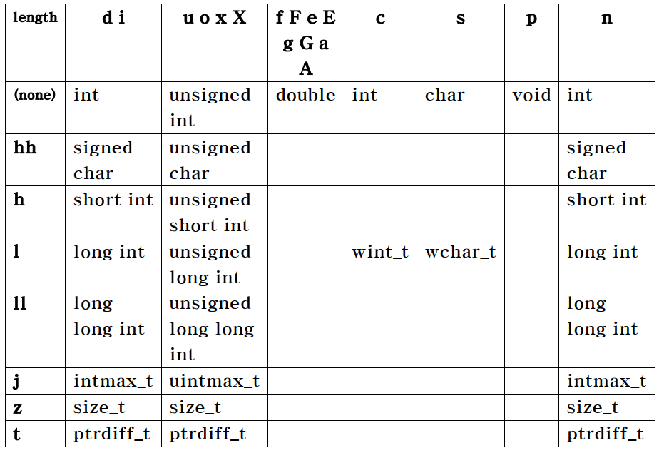
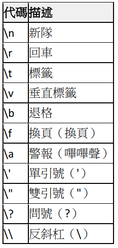

第二章
C++的算術運算:
簡介:
這邊將會教你一些基本的算術運算符如果你想知道其他的運算符可以到運算符與字符。
小叮嚀:在運算的時候如果沒有用小括括弧起來都是由左至右計算。
算術運算子的優先順序:
| 運算子 | 運算 | 計算的順序(優先順序) |
|---|---|---|
| ( ) | 小括弧 | 第一個計算。如果小括弧是巢狀的話，會先計算最內層的。 |
| * | 乘法 | 第二個計算。 |
| / | 除法 | 由左至右。 |
| % | 取餘數(MOD) | 由左至右。 |
| + | 加法 | 第三個計算。 |
| - | 減法 | 由左至右。 |
| = | 賦予 | 最後計算。 |
簡單的算術:
這條棒棒後面是執行結果~
加法:
10 + 5 = 15
減法:
10 - 5 = 5
乘法:
10 * 5 = 50
除法:
10 / 5 = 2
取餘數(MOD):
10 % 5 = 0
混用:
((1 + 2) * 5 ) / 5 + 3 * 6 = 21
資料型態的運用:
簡介:
這邊會簡單的教你如何使用一個型態宣告變數來儲存你的資料，做一些簡單的運算。
如果想要更詳細的了解型態可以往下。
如何宣告一個變數:
如果我們要宣告一個有型態的變數那我們在變數的前面就必須加上他的型態，下面我舉幾個常用的型態。
以上面第一個例子，我宣告了一個叫做a的整數型態，那麼我就可以把這a儲存整數的資料，例如 a = 1024 那 a 就等於 1024。
變數的運用:
這條棒棒後面是執行結果~
宣告一個有型態的變數接來如何運用這些變數，其實很簡單就跟一般在運算時一樣，只是它變成了一個代數運算罷了。
下面我宣告了a與b都賦予它們一個值50接著把他們兩個相加。
a + b = 100你也可以這樣寫:
更複雜的運算:
Ans: 420
兩種方法讓你輕鬆一些:
程式員都是偷懶的，有時候要一直重複的宣告一個值是非常麻煩的，如果要改的時候全部都要改，漏改的話還要找老半天，就像我要計算一個圓周結果我用複製貼上的發現我複製錯了!這時候你就要每個都要修正ORZ...(雖然我下面舉的是正確的)。
Ans: 75.3982鍵入的常量表達式（const）:
下面已經把原本的3.14159宣告成了一個pi，那麼以後要使用3.14159的時候就可以直接使用pi這個變數了，如果發現宣告錯誤了那只須要改一個就可以了。
Ans: 75.3982預處理器定義（#define）:
#define identifier replacement
此替換由預處理器執行，並在編譯程序之前發生，從而導致一種盲目替換，不以任何方式檢查所涉及的類型或語法的有效性。
Ans: 75.3982
還可以這樣寫:
交換前: a = 50 b = 100
交換後: a = 100 b = 50
完整型態介紹:
基本型態種類:
- 字符型態: 它們可以表示單個字符，例如： 'C' 或 '*' 。
- 數字整數類型： 它們可以存儲整數值，例如： 64或1024。
- 浮點類型： 它們可以表示實際值，例如：3.14或0.01，具有不同的精度級別，取決於使用三種浮點類型中的哪一種。
- 布爾類型： 在C++中才有的，只能表示兩種狀態其中一種，不是true就是false。
以下是C++中基本類型的完整列表：
| 型態種類 | 型態指令 | 尺寸/精度/簡介 |
|---|---|---|
| 字符類型 | char | 正好一個字節大小。至少8位。 |
| char16_t | 不小於char。至少16位。 | |
| char32_t | 不小於char16_t。至少32位。 | |
| wchar_t | 可以表示支持的最大字符集。 | |
| 整數類型 (有號) | signed char | 大小相同char。至少8位。 |
| short int | 不小於signed char。至少16位。 | |
| int | 不小於short int。至少16位。 | |
| long int | 不小於int。至少32位。 | |
| long long int | 不小於long int。至少64位。 | |
| 整數類型 (無號) | unsigned char | 大小相同char。至少8位。 |
| unsigned short int | 不小於signed char。至少16位。 | |
| unsigned int | 不小於short int。至少16位。 | |
| unsigned long int | 不小於int。至少32位。 | |
| unsigned long long int | 不小於long int。至少64位。 | |
| 浮點數類型 | float | 精度最低的型態。 |
| double | 精度不低於 float。 | |
| long double | 精度不低於 double。 | |
| 字符串(C++) | String | 需標頭 < string > |
| 布爾類型 | bool | 只有true或false。 |
| 空洞類型 | void | 沒有存儲空間。 |
| 空指針 | decltype(nullptr) |
上面的類型大小：
| 尺寸 | 可表示值 | 簡化 |
|---|---|---|
| 8位 | 256 = | 28 |
| 16位 | 65,536 = | 216 |
| 32位 | 4,294,967,296 = | 232 |
| 64位 | 18,446,744,073,709,551,616 = | 264 |
C++才有的cout
簡介
C++的cout想必大家並不陌生，不過他其實還可以配上其他的指令讓他可以有格式化的輸出，前面留空白等...這邊就簡單的介紹幾種常用的。
這跟棒棒後面是輸出結果~
簡單得輸出:
想必大家都對這個程式碼再熟悉不過了。
Hello World!
多個列印。
1. Hello World!2. Hello World!3. Hello World!
如果我想換行怎麼辦呢?
只需要在字尾加上endl(end line)就可以了。
1. Hello World!
2. Hello World!
3. Hello World!
格式化的輸出:
首先我們必須加上這個標頭才能實作之後的內容。
設置字段寬度:
setw(字段寬度)，這個指令是設置要在輸出操作上使用的字段寬度。
下面範例我預設了10格然後輸出55，那55前面就會空8格。
55
如果我們再加一條指令setfill(預留位置顯示的字元)。
下面範例我設定了預設字段要填0，然後預設了10格接著輸出55，那55前面就會補8格0。
0000000055
很顯然的這個程式並不想印小數點第五位以後的數字了(注意:小數點的那個點也算一位喔!)。
3.14159
如果我們想要印小數點後更多位的話，再加一條指令setprecision(顯示小數點後幾位)。
3.14159265359
我也可以指定指印兩位或著不印。
3.14
3
靠其:
如何左右靠其，我們可以看下面的範例。
-3.1415 .
- 3.1415.
-3.1415.
我們常用的格式化輸出printf
簡介
在使用printf之前我們要先知道型態對應的格式是什麼，這時候你可能就滿頭問號了，不過別緊張跟著範例看下去你很快就會學會了。
如果你想更深入的了解型態對應的格式還有字符，我在最下面會列出完整的格式對應表與字符表。
這跟棒棒後面是輸出結果~
printf的用法:
其實用法語cout很像，只不過改成了printf，標頭改成#include < cstdio >(標準輸入輸出)，雖然C++包含著C不過我還是有義務告訴你。
Hello World!
計算也一樣。
20
20
我想要印好幾個!
1. Hello World!2. Hello World!3. Hello World!
這邊換行跟cout不一樣他是直接在裡面打一個字符'\n'就可以完成換行了。
1. Hello World!
2. Hello World!
3. Hello World!
格式化的輸出:
如果我們想要印一個整數型態的數字我們就在雙引號裡面加上對印的格式，以下我幾個舉常用的型態格式。
以第一個整數範例來看假如我要印一個整數型態的a，那我就要在雙引號內保留一個整數型態的格式，之後再雙引號外面補上要輸出的變數。
a = 10
b = 3.140000
c = C
d = C++
多個輸出:
資料都是由左到右排下去的。
10 20 30 40
a = 10 b = 3.140000 c = C d = C++
設置字段寬度:
printf的字段寬度設定就簡單多了，你只需要在格式前面加你想留的格數就行了。
下面範例我在f前面寫了10就是字段寬度是10，所以3的前面就會有2格空白。
3.141593
小數點的話只需要加一個點後面寫要幾位就可以了(如果不夠會四捨五入)。
3.14159265359
如果想要讓他補0的話就在數字前面加0就可以了。
0000000777
你也可以用星號取代數字。
10
完整的型態格式表:
如果我要查int那就是1-1那一個那就是%d這樣。

字符表:
如果你要列印單引號等符號就加一個反斜線或是打兩次%%這樣。

輸入:
簡介:
輸入的簡單運用。
綠色棒棒是輸入
粉色棒棒是輸出
cin
再輸入之前我們要先宣告一個變數讓我們輸入的資料有地方儲存，注意cin是>>往右的箭頭與cout是相反的。
10
a = 10
100 500
a + b = 600
scanf
scanf()會將十進位數字字串根據 % 後的指定格式轉換為二進位的表示方法，假如你想輸入的是自原就是改%c以此類推，& 為取址符號， 請務必使用於目的地變數之前。
10
a = 10
100 500
a + b = 600